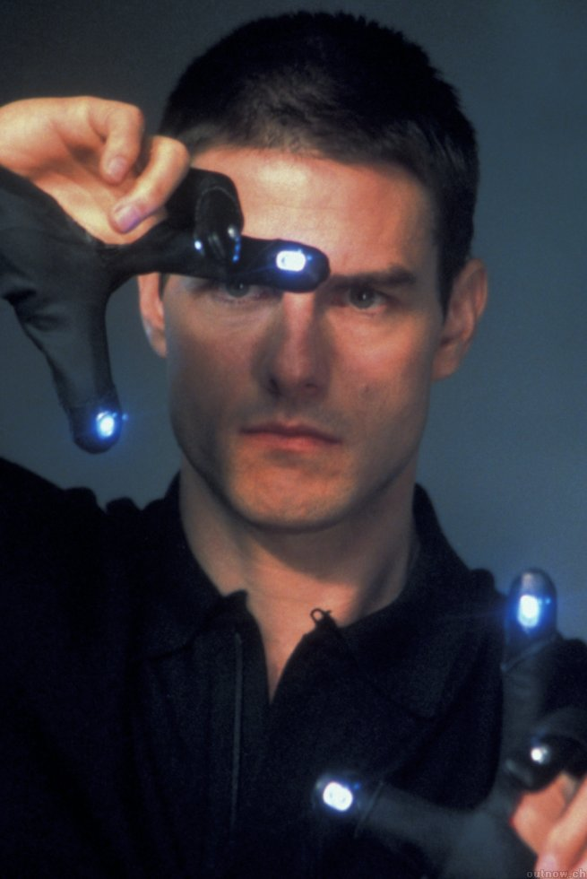
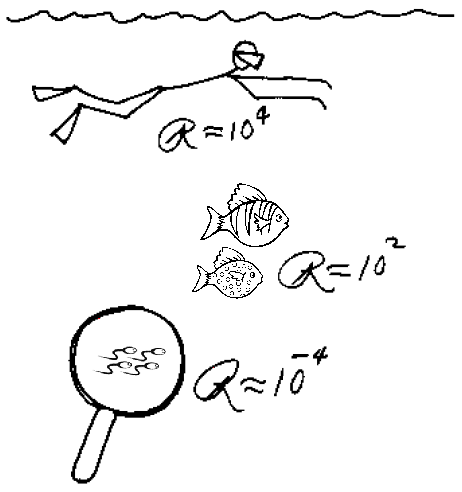

Projects
Polymers: the Art, Science & Technology
 Polymers are man-made or natural materials of great importance for science, industry and everyday life. They are building blocks of almost anything you can imagine (literally, from plastic coffee spoon to the airplane) and have made our lives easier in numerous ways. PE, Nylon, Teflon, Kevlar and Plexiglas have become so popular that today over 200 million tons of these polymers are produced annually. Polymers are not only cheap, durable and easy to cast in various shapes, but also whole spectrum of desirable chemical and physical properties can be obtained, if one is familiar with polymer chemistry. If you believe polymers are those blubber things used only by mad scientists, think again. Human beings are in fact made of polymers! DNA, RNA, proteins and polysaccharides are all polymers, and evolution of life itself was enabled due to polymer properties of these biomolecules.
Polymers are man-made or natural materials of great importance for science, industry and everyday life. They are building blocks of almost anything you can imagine (literally, from plastic coffee spoon to the airplane) and have made our lives easier in numerous ways. PE, Nylon, Teflon, Kevlar and Plexiglas have become so popular that today over 200 million tons of these polymers are produced annually. Polymers are not only cheap, durable and easy to cast in various shapes, but also whole spectrum of desirable chemical and physical properties can be obtained, if one is familiar with polymer chemistry. If you believe polymers are those blubber things used only by mad scientists, think again. Human beings are in fact made of polymers! DNA, RNA, proteins and polysaccharides are all polymers, and evolution of life itself was enabled due to polymer properties of these biomolecules.
This project has a goal to explore the intriguing chemistry of polymers. We will synthetize a few synthetic and natural-occurring polymers, and measure their physical and chemical properties. The participants in this project will learn about polymer and macromolecular chemistry and gain valuable laboratory skills and experience. Advanced methods like vapor pressure osmometry and basic thermogravimetry will be used in our work.
Edi Topic
University of Zagreb, Croatia
Edi is a first year student of chemistry at the University of Zagreb. He is interested in various unexplored material chemistry topics, like organometallic polymers and exotic semiconductors, but also physics and all kinds of experimental sciences. Edi was working as a teacher on the 21st Summer Computer Science School and is a winner of two Bronze Medal Awards at International Chemistry Olympiad in Ankara and Washington. In free time Edi likes to do do-it-yourself projects, cook and play guitar.
Ancient Volcanos in Slavonia (Croatia)
Main goal of geology as a science is to understand and explain the history of our planet through evolution of environments and life. Our area (Croatia, Slavonia county) throughout the history has undergone all sorts of changes, causing vastly different and unexpected environments and life forms. At one point in the history of our planet, Slavonia county was a deep ocean disturbed with gurgling volcanic islands, whose evidence is today seen in geological complexity of Slavonia Mt. As the planet Earth is constantly changing, to predict the future processes, first we must understand the past, for which the geology gives us necessary tools.
The goal of this project is to learn skills and programs to accurately collect, understand and interpret geological data. It is expected that participans complete field work, and independently make sedimentological, paleontological and facies analysis of collected and given samples using microscopes and referent literature. The main objective is to discover types of environments evolving on particular outcrops, and its given geological scale. After finishing this project the participants will aquire the basic knowledge of geology and its means of understanding and explaining the world around us. They will go through fieldwork, sample analysis and interpretation of deposits using classical methods and programs. This project will therefore give participants insight in how to read and explain worlds long gone, from tracks left to us to decipher.
Jelena Spanicek
University of Zagreb, Croatia
Jelena graduated at the Department of Geology and Palaeontology, Faculty of Science, University of Zagreb, and later on applied for the postgraduate program in the same Department. During her studies she encountered many areas of geology, but always had a special interest in evolution. That was exactly what attracted Jelena to geology or more precisely to palaeontology – evolution of the universe, Earth and the life on Earth, as well as finding out how and why the changes occurred and the realization that nothing is permanent.
Organisms with Altered Genomes – How and Why?
 Organisms with artificially altered genetic material are called genetically modified organisms (GMOs). These organisms contain their own modified or completely foreign genes called "transgenes". In last two decades GMOs were a topic of extensive and controversial debates among experts and non-experts worldwide regarding their usage in food, drug and vaccines production. GM food is produced extensively, especially in USA, but there are also GMO free zones where the planting of altered seeds and sales of the GM food are completely restricted. Proper manipulation of GMOs is regulated to prevent their unwanted spread in the environment. GMOs are often considered dangerous for human health and the environment, with reasons that include potential gene transfer to other organisms, particularly antibiotic resistance genes, decrease of biological diversity, allerginicity and gastrointestinal problems. First genetically modified plant was tobacco, but the first GM plant on the market was tomato Flavr Savr, with blocked gene responsible for ripening. There are also a lot of other examples of genetically modified organisms, like malaria resistant mosquitos, GM fluorescent zebrafish, golden rice and many more. Arabidopsis thaliana is a widely used plant model organism in molecular biology. Like other plants, Arabidopsis can be transformed with genes that can give it better features, for example protection against insects, herbicide tolerance, etc. Nowadays it is of huge importance to know how to detect presence of transgenes in organisms and how to handle such organisms.
Organisms with artificially altered genetic material are called genetically modified organisms (GMOs). These organisms contain their own modified or completely foreign genes called "transgenes". In last two decades GMOs were a topic of extensive and controversial debates among experts and non-experts worldwide regarding their usage in food, drug and vaccines production. GM food is produced extensively, especially in USA, but there are also GMO free zones where the planting of altered seeds and sales of the GM food are completely restricted. Proper manipulation of GMOs is regulated to prevent their unwanted spread in the environment. GMOs are often considered dangerous for human health and the environment, with reasons that include potential gene transfer to other organisms, particularly antibiotic resistance genes, decrease of biological diversity, allerginicity and gastrointestinal problems. First genetically modified plant was tobacco, but the first GM plant on the market was tomato Flavr Savr, with blocked gene responsible for ripening. There are also a lot of other examples of genetically modified organisms, like malaria resistant mosquitos, GM fluorescent zebrafish, golden rice and many more. Arabidopsis thaliana is a widely used plant model organism in molecular biology. Like other plants, Arabidopsis can be transformed with genes that can give it better features, for example protection against insects, herbicide tolerance, etc. Nowadays it is of huge importance to know how to detect presence of transgenes in organisms and how to handle such organisms.
During this project, students will try to detect presence of transgenes in different Arabidopsis plants. To be able to do so they will enter the exciting world of molecular plant biology and get familiar with basic methods used in molecular biology, like nucleic acid and protein isolation, as well as plant, bacterial and animal transformation methods. Aside from practical skills gained during the project, students will be able to complement their theoretical knowledge in basics of genetics, biochemistry and molecular biology which will enable them develop their own critical scientific opinion regarding this ever striking theme.
Marija Klasic
University of Zagreb, Croatia
Marija graduated molecular biology at Faculty of Science in Zagreb. She is currently a PhD student and teaching assistant in the same institution. Her main research interest is epigenetics in patients with inflammatory bowel diseases, but she also likes plant cell biology. During her education she was student associate on several courses and she participated in plant workshop during Biology Night at the Division of Biology. When she is not working in the lab or with students, she is dancing Croatian traditional dances and taking care about the plants and pets around her house.
Touch Screens are History
Have you ever wished that you can control your computer without a keyboard and a mouse? Changing a channel on TV without remote control? This can be accomplished by using image processing and machine learning. Image processing is an engineering field which studies the way we can extract useful information from images. On the other hand, machine learning is a branch of artificial intelligence that deals with self-learning algorithms. Both of these disciplines form a core research area within engineering and computer sciences. For this project, we will use neural networks, one of the most popular machine learning methods, which imitate processes in the human brain.
In this project we will make a program that recognizes which number is written using fingers in front of the camera. At first, students will be introduced with more complex approach to programming in the programming language “Matlab”. For data acquisition, students will record the movement of fingers with a camera. Videos obtained will be used to collect the data for our learning algorithm. Information from the videos will be extracted using a very successful method called Hough transformation and then used as input for the neural network. As a result, we will find out which number has been "written".
Nemanja Jankovic
University of Belgrade, Serbia
Nemanja is a 2nd year student of Electrical Engineering at the University of Belgrade. He participated at the Summer School of Science as a high school student in 2011 and as a Swapshop leader in 2012. Nemanja also participated in Petnica Science Center in Serbia for four years, seminar of electronic. Apart from science he enjoys spending time with his friends, play table tennis and all things that include fun.
When Physics Meets Biology in the Field of Liquids
In the course of evolution nature has developed many interesting phenomena. Some of them are insect locomotion on water, motility of flagella and cilia and transport of water into high plants. Despite different observations of the mentioned biological examples, the understanding of their fundamental principles is based on physical rules of liquids, such as surface tension, Reynolds number and diffusion. The cited biological processes attract considerable attention not only because of their fundamental importance in biology but also because of their practical application. We can implement these biophysical properties into devices, such as artificial cilia, or methods for measuring, such as the red blood cell sedimentation test, which belong to the field of bionics.
The aim of this project is to understand some liquid properties from both physical and biological point of view. We will start our research with random movement of molecules. We will measure diffusion constants using a camera and computer analysis. We will then proceed by examining molecules that stick together. Generally this leads to two effects: one is surface tension which will be measured with torsion balance and capillary rise, the other is called viscosity and happens when parts of liquid flow at different velocities. We will measure viscosity with dropping spheres and with capillary viscometer. Our understanding will be expanded by outstanding experiments and biological examples. In the end we will see how to apply these mechanisms to develop new technologies. Participants of this project will become aware of the physics importance in its explanation of the natural phenomena and of the existence of interdisciplinarity in science that bridges the gaps between different branches.
Nina Lopic
Univeristy of Ljubljana, Slovenia
Nina Lopic is a student of a second cycle degrees of Biophysics at the University of Ljubljana. Her main interest is experimental physics with connections to biomedicine. In her diploma she investigated a stent as a tubular flow heater in the MRI examination. During her studies, she was a demonstrator in the science center in Ljubljana for 2 years. As a hobby she plays oboe.
The Art of Playing Games
 Thinking has always been entertaining to us. Especially so when it has helped us to win some advantage. That is when our intelligence comes into force. And living is often like playing games. Humans played games from the prehistoric times. Well-known ancient games from Africa, China, and India are still popular today. But can we understand how and why someone can win a game? What does it take to know which moves take us to victory and give the opponent little or no chance? And if we could understand this, could we teach a computer or a robot to play and win games over humans? Being able to choose a good and intelligent strategy is important both for playing games and for solving many real-world problems. The field of Artificial Intelligence provides a solid theory, but every game is a little bit different and requires your own wit to get involved.
Thinking has always been entertaining to us. Especially so when it has helped us to win some advantage. That is when our intelligence comes into force. And living is often like playing games. Humans played games from the prehistoric times. Well-known ancient games from Africa, China, and India are still popular today. But can we understand how and why someone can win a game? What does it take to know which moves take us to victory and give the opponent little or no chance? And if we could understand this, could we teach a computer or a robot to play and win games over humans? Being able to choose a good and intelligent strategy is important both for playing games and for solving many real-world problems. The field of Artificial Intelligence provides a solid theory, but every game is a little bit different and requires your own wit to get involved.
We will experiment with a collection of games, focusing on board games. The aim is to design and implement a program that can play a game against a human. We will demonstrate how search algorithms, min-max heuristics, game theory, reinforcement learning and evolutionary algorithms can be used to design intelligent game playing agents. For this purpose, will use the programming language Java. We also plan to bring a robot arm that will be connected to the program so that the robot could play games against people. Except AI, the participants in this project will learn about programming, computer science, and get acquainted with computer vision methods in exciting ways.
Zuzana Koysova
Comenius University, Bratislava, Slovakia
Zuzana studies Computer Science at the Comenius University in Bratislava. She is in her last year of Master's program and is working on her diploma thesis on visualization of streamed data. Zuzana is also creative and interested in programming, 3D modeling and animation. She participated at the Summer School of Science 2012 as a project leader, programming LEGO robots to find their way through a maze with her students.